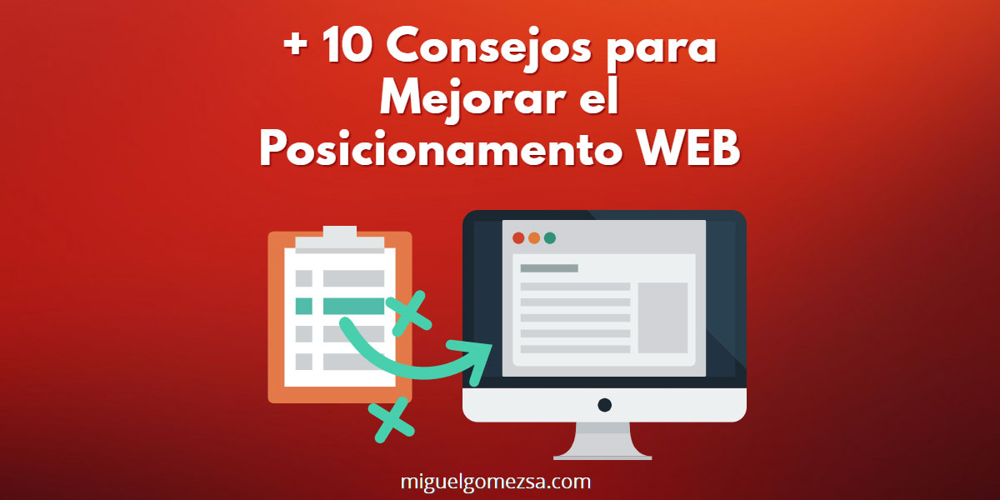

Responsivos
A través del tiempo la tecnología a avanzando y eso se nota en manera como consultamos e interactuamos con la web sea para educarnos, divertirnos etc. , gran mayoría de personas invierten buen dinero en el uso de un dispositivo móvil el cual es
más practico y útil usar nuestro móvil que encender el computador ,por todo lo anterior el diseño de pagina web no es la exención en las novedades y precisamente responsivo es la manera como un sitio se adapta a los equipos móviles ,smarthones
o tablets.
Responsivos con Media Queries
Se aplica para dar una calidad a nuestro sitio web, tendiendo en cuenta el concepto de responsivo al momento de ajustar en la pantalla de nuestro dispositivo móvil que no se deteriore o note como pequeños puntos no legibles y además que al ajustarse
al tamaño del dispositivo pierda la vista o contorno del sitio.
medidas para mejorar el SEO
Básicamente este concepto lo que nos trae a relucir o explicar es la diferentes maneras de poder posesionar nuestro sitio web en las búsquedas ,además evitando penalizaciones .para lo anterior podemos usar palabras claves relacionadas a la
página web, saber a qué publico esta dirigido ,podemos usar blogs y diferentes maneras que podemos contemplar siempre y cuando el objetivo principal sea posesionar el sitio y no penalizar el mismo.
